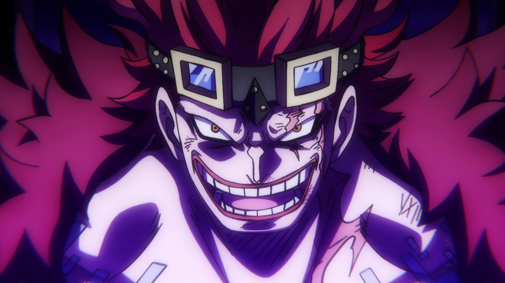
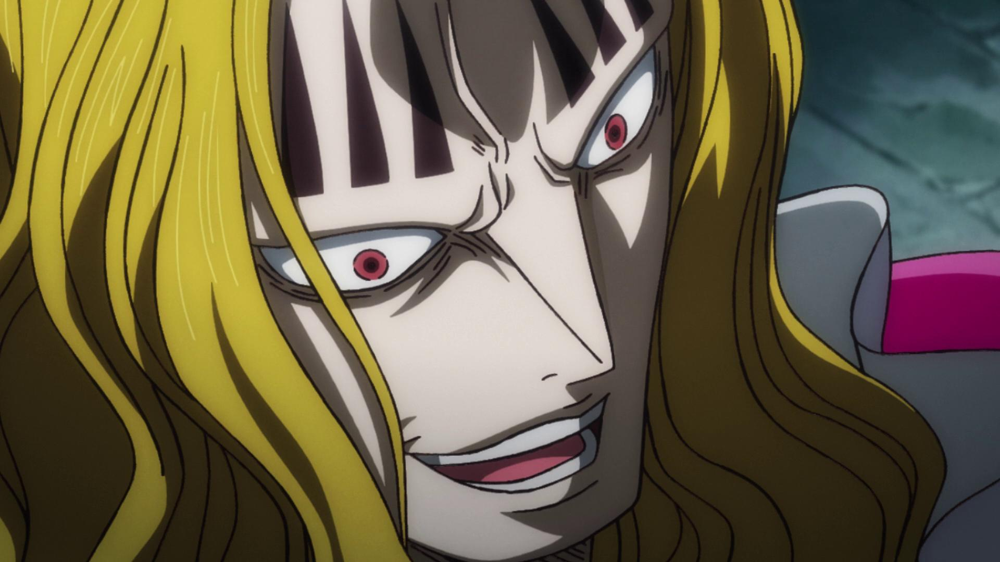
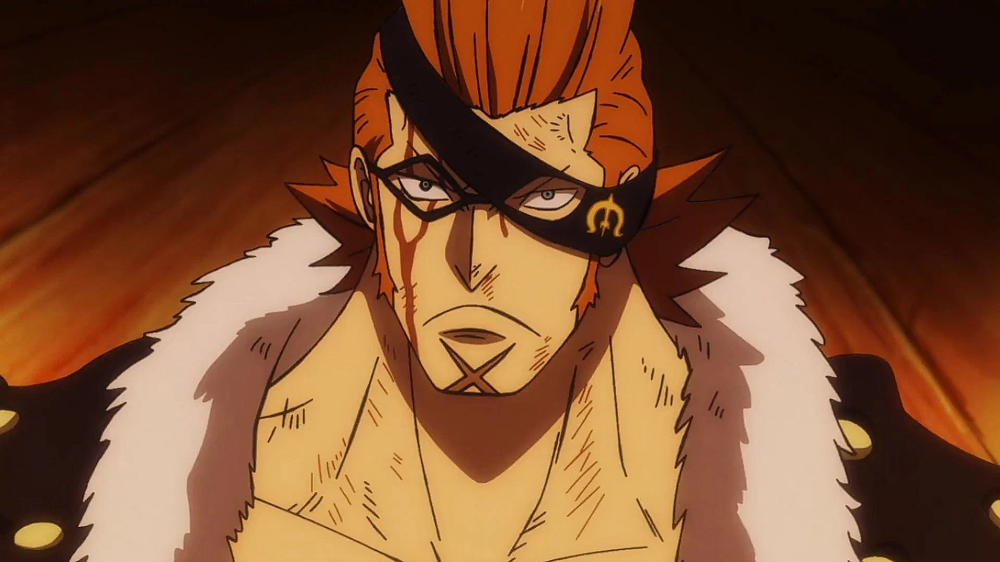
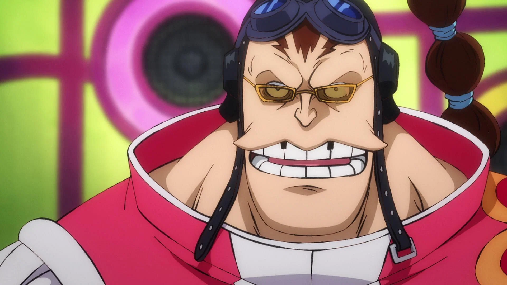
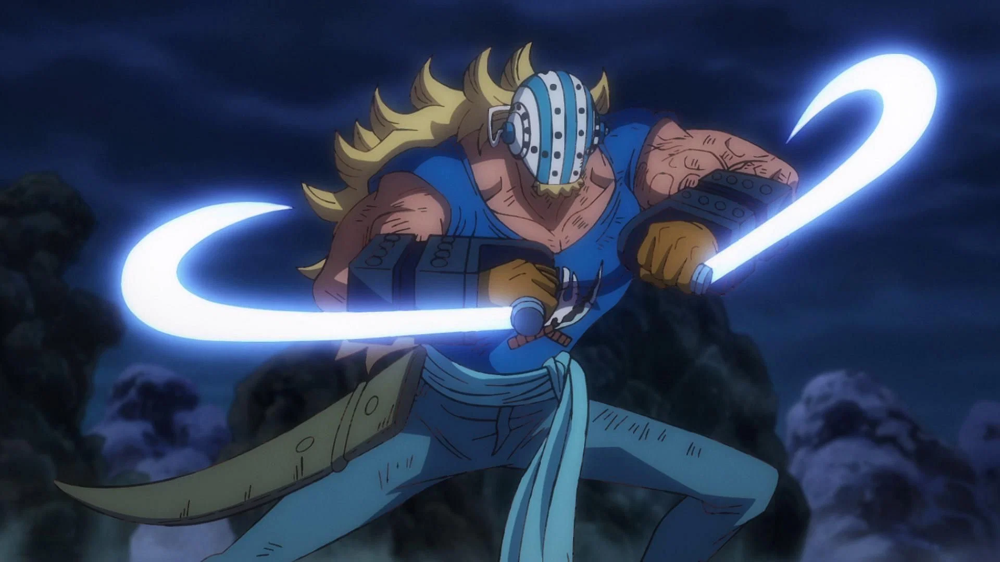
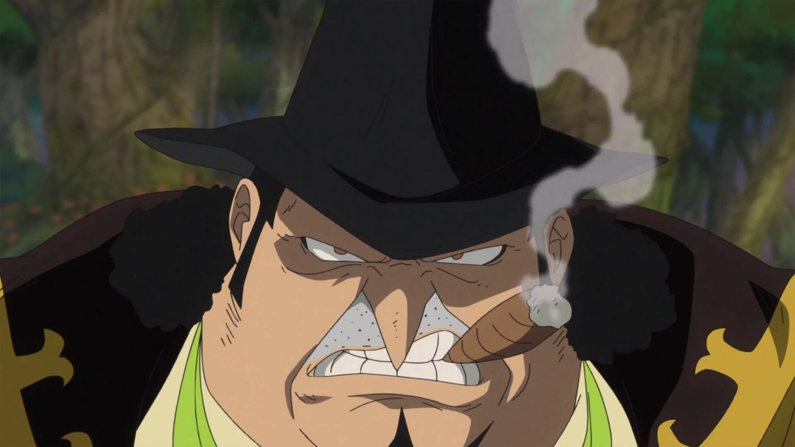
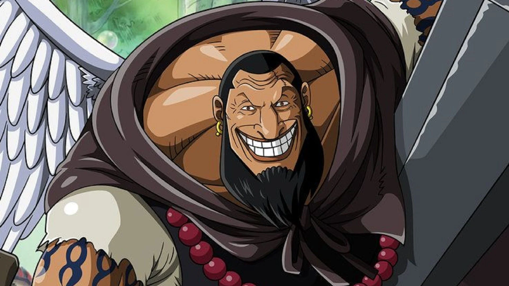
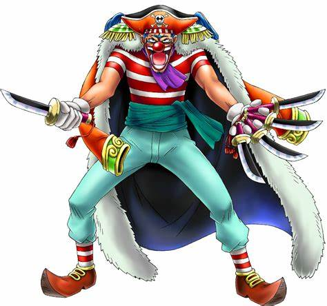

La peor generacion
La peor generación es un término usado para referirse a los once piratas cuyas recompensas superaban los 100.000.000 Belly cuando llegaron al Archipiélago Sabaody justo antes de la Guerra de Marineford. Aqui se encuentran los piratas de la peor generacion ordenados por su recompensa inicial.

Eustass Kid
Capitán de los Piratas de Kid
Recompensa
315.000.000
Monkey D. Luffy
Capitán de los Piratas de Sombrero de Paja
Recompensa
300.000.000

Basil Hawkins
Capitán de los Piratas de Hawkins
Recompensa
249.000.000

X Drake
Capitán de los Piratas de Drake
Recompensa
222.000.000

Trafalgar Law
Capitán de los Piratas de Heart
Recompensa
200.000.000

Scratchmen Apoo
Capitán de los Piratas de Apoo
Recompensa
198.000.000

Killer
Combatiente de los Piratas de Kid
Recompensa
162.000.000

Jewelry Bonney
Capitana de los Piratas de Bonney
Recompensa
140.000.000

Capone Bege
Capitán de los Piratas de Firetank
Recompensa
138.000.000
Roronoa Zoro
Espadachín de la tripulación Sombrero de Paja
Recompensa
120.000.000

Urouge
Capitán de los Piratas de Urouge
Recompensa
108.000.000
El proximo rey de los piratas
Buggy el payaso

La idea de que Buggy, el payaso pirata, termine siendo el Rey de los Piratas en One Piece podría parecer una teoría descabellada a primera vista, pero tiene cierto sentido cuando se considera la naturaleza impredecible y a menudo cómica de la serie. Aquí te presento una teoría que podría respaldar esta idea:
- 1. La Fortuna de Buggy Buggy ha demostrado a lo largo de la serie tener una suerte increíble. A pesar de sus limitaciones como luchador y de su constante cobardía, siempre parece salir ileso de situaciones que habrían sido fatales para otros. Esta suerte podría ser un guiño al destino, sugiriendo que tiene un papel más grande que desempeñar en la historia de lo que parece.
- 2. El Poder de la Percepción Pública Buggy ha sido accidentalmente elevado a un estatus casi mítico entre los piratas y los civiles por igual. Después de su participación en la Guerra de Marineford, fue erróneamente percibido como un pirata extremadamente poderoso, lo que lo llevó a ser nombrado Shichibukai (Guerrero del Mar). Este tipo de malentendidos y exageraciones podrían continuar hasta el punto en que el mundo entero llegue a creer que Buggy es el digno sucesor de Gol D. Roger, el anterior Rey de los Piratas.
- 3. Las Conexiones de Buggy Buggy tiene conexiones poderosas e inusuales. Fue aprendiz en el barco de Gol D. Roger, lo que lo coloca en una posición única en la historia. Además, su relación con personajes como Shanks, uno de los Yonkou, y su influencia sobre los miembros de su propia tripulación podrían jugar un papel crucial en su ascenso al poder. Incluso personajes más poderosos podrían, por error o por interés, apoyarlo para convertirse en el Rey de los Piratas.